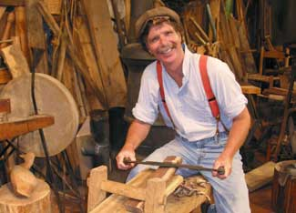
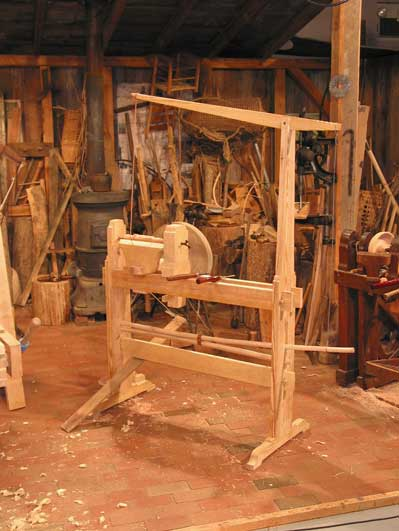
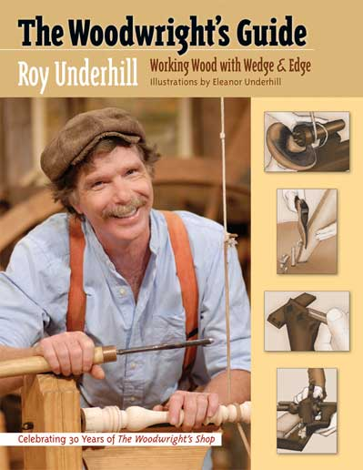

More than 25 years ago, Roy Underhill adopted the word “woodwright” when he developed the concept for his PBS television show, “The Woodwright’s Shop.” Since then, he’s been known as the woodwright - the expert on historical woodworking methods and proponent of hand tools.
How did you become interested in woodworking?
Just like all kids, I enjoyed making things. My sister worked at the Smithsonian when she was in college; early America was her area. That might have been a big influence.
But a lot of it was being a product of the times - getting out of college in the early ’70s during a deep recession and time of unemployment. This was the time of a strong back-to-the-land movement. That grew into the beginning of environmental awareness, and I jumped into that wave with both feet.
What’s your philosophy on using power tools?
I learned woodworking using power tools and later realized the errors of my ways, like the song says, “I once was lost, but now I’m found.” Nobody understood that our actions had the kinds of consequences that we’re seeing now. Working with hand tools is a much more eco-friendly way to work. It’s a deep part of the human experience, working with that blade and the wood. It’s much like when Obi-Wan Kenobi gave Luke Skywalker the lightsaber and said, “This is the weapon of a Jedi Knight. Not as clumsy or as random as a blaster. An elegant weapon for a more civilized age.” The ancestral simplicity of the blade is a great thing.
If you’re not a professional and this is something you’re doing for yourself, it might as well be an ethical endeavor. I think working with hand tools is the ethical choice for those who are not trying to make a living in woodworking. And if you are manufacturing items for sale, maybe you need a water wheel or some alternate source of power. The real human experience is the process, not the product.
What would say to encourage readers to try working with hand tools?
When you make stuff with your hands and the wood and iron and steel, you’re connecting with something deep in the human experience.
If people are accustomed to using modern tools and want to try a project with hand tools, what advice would you give them?
Just start slowly. And be reasonable about it, so you don’t get frustrated. Instead of using jigs and machines, try making some joints by hand.
It doesn’t have to be extreme right from the start. There are different flavors of woodworking, just like there are vegans or vegetarians. If you have to fell the tree from the beginning, that’s hardcore stuff. Many people just take it from the stage where they get the lumber from a mill and do the planing, joinery and finishing by hand
But you need to have good quality tools. Make sure you know how to sharpen, if you’re not working with sharp tools, you’re not there. If you have a violin, you need to know how to tune it. Working with a synthesizer, it’s digitally done; you don’t have to have that extra sensitivity. You do have to know how to tune these hand tools like you have to know how to tune a violin.
What tools should a beginning woodworker start with?
The real basics are a good set of chisels, a nice jackplane and a hand crosscut saw. But the second step is important. Five tools will open up that next level:
Most of those tools aren’t easy to find in a local hardware store. Where could a woodworker get them?
There’s a great revival in hand tools. If you can’t find them used or at antique stores, there are a lot of folks making them. Lie-Nielsen and Veritas (Lee Valley) are doing real well making good hand tools. When you buy these new hand tools, you’re supporting small American manufacturers. It’s a great way of being a locivore - “locitech” in this instance - localizing the economy and supporting artisans that are making these wonderful tools.
I generally work with 19th century tools. Many of those tools were made at the apogee of hand tools. Manufacturers were competing to make the best quality tools, and then power tools replaced hand tools. I like tools from that era, because they’re inexpensive and their quality is just wonderful. You could say they’re recycled tools that someone bought in 1871, and they’re still useful. I don’t know how many electric machines from 1971 are still running.
What are the best sources for historical information on woodworking and tools?
Dictionary of Tools Used in the Woodworking and Allied Trades, by R.A. Salamon. It’s kind of hard to read, but it has great information.
Mechanik Exercises by Joseph Moxon (1683). Moxon deals personably with the material, and it’s insightful.
Check with your library to find these books.
Tell us more about your new book, The Woodwright’s Guide: Working Wood with Wedge and Edge.
I tried to get at the grain that runs through all woodworking, following the process from taking an axe into the forest to cabinet making and fine furniture. The way you’re working with that wood is always a combination of wedge and edge. It’s always the blade. It’s always the grain. There’s always structure in the wood. There’s always a cutting edge or wedge action.
What types of projects are you working on for the Woodright’s Shop?
The new season starts with the governor of North Carolina, Mike Easley, making a little walnut side table. It shows that everyone has woodworking in his or her blood. It’s a part of all of us. That’s what our ancestors have been doing for thousands of years, so we’re all descendants of people who worked wood by hand.
Some of the craftsmen from Colonial Williamsburg will show carving and high-end veneer work. We also feature a man doing lumberjack fan carving. He takes one piece of wood and works it, splits it and spreads it out to form a wooden fan - out of one piece of wood! It’s a wonderful folk craft.
And we have an interesting story on Berea, Ky., and the woodworking craft that’s grown up around this college and craft community.
You can watch episodes from the current season at www.pbs.org.
What’s your next project?
I’m starting a woodworking school in Pittsboro, N.C. I’m looking forward to teaching again. That will open in 2009. I sincerely believe in making things with our hands and using old methods to accomplish quality work. And it’s a force for good, not just in the individual, but good in society. Like a seed bank, we need a technology bank that preserves these old things.
If you’re interested in hand tools, read Best Low-Tech Tools and Choosing Chisels.
What’s your philosophy on using hand or power tools? Share your thoughts in the comments section below.|
 RACHELL UNDERHILL Roy Underhill is an expert in historical woodworking methods. |
 RACHELL UNDERHILL Plans for this spring-pole lathe are available in the appendix of The Woodwright’s Guide: Working Wood with Wedge and Edge. |
 MIKE ONIFFREY The Woodwright’s Guide: Working Wood with Wedge and Edge traces wood from tree to finished furniture - all using hand tools. |